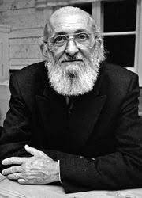
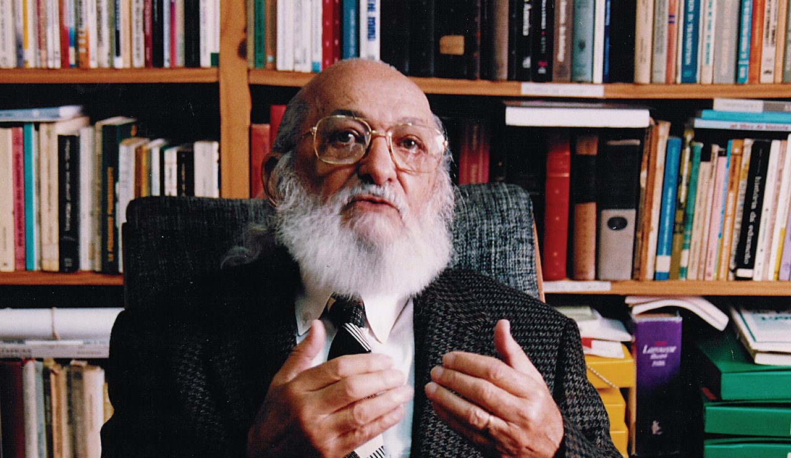
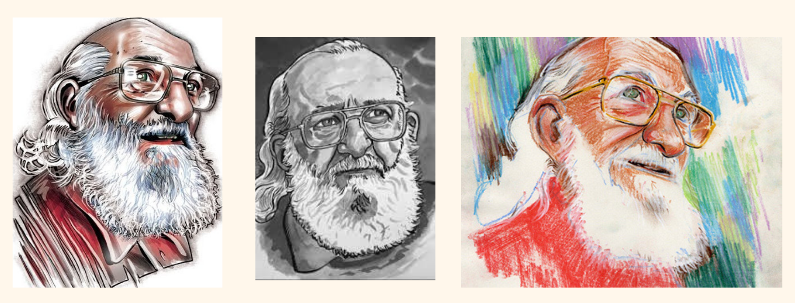
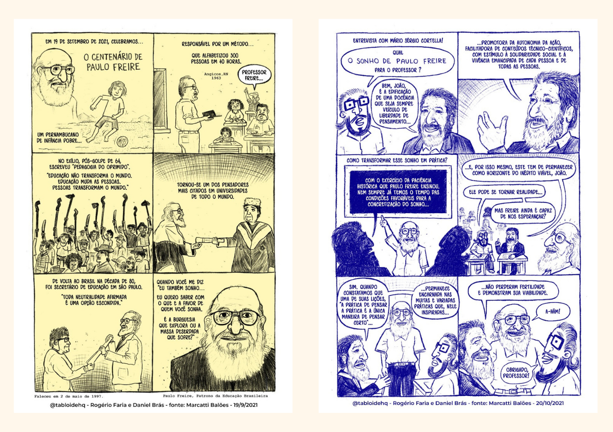
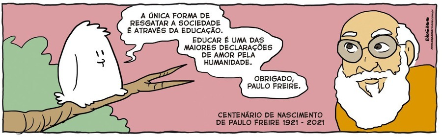

PAULO FREIRE: BIOGRAFIA

FAMÍLIA
Paulo Reglus Neves Freire nasceu em 19 de setembro de 1921, no Recife, capital de Pernambuco.
Filho de Joaquim Temístocles Freire e de Edeltrudes Neves Freire, Paulo morou na cidade do Recife até 1931,
junto com seus dois irmãos e uma irmã, ficou órfão de pai aos treze anos.
FORMAÇÃO
Paulo Freire iniciou o curso ginasial no Colégio 14 de Julho, no centro do Recife.
Com 13 anos perdeu o seu pai e coube a sua mãe a responsabilidade de sustentar todos os 4 filhos.
Sem condições de continuar pagando a escola, sua mãe pediu ajuda ao diretor de Colégio Oswaldo Cruz,
que lhe concedeu matrícula gratuita e o colocou como auxiliar de disciplina. Posteriormente Paulo tornou-se
professor da língua portuguesa.
Em 1943 Paulo Freire ingressou na Faculdade de Direito do Recife.
CARREIRA
Em 1943 Paulo Freire ingressou na Faculdade de Direito do Recife. Depois de formado, continuou atuando como professor
de português no Colégio Oswaldo Cruz e de Filosofia da Educação na Escola de Belas Artes da Universidade Federal de Pernambuco.
Com 13 anos perdeu o seu pai e coube a sua mãe a responsabilidade de sustentar todos os 4 filhos.
Sem condições de continuar pagando a escola, sua mãe pediu ajuda ao diretor de Colégio Oswaldo Cruz,
que lhe concedeu matrícula gratuita e o colocou como auxiliar de disciplina. Posteriormente Paulo tornou-se
professor da língua portuguesa. Em 1943 Paulo Freire ingressou na Faculdade de Direito do Recife.
de português no Colégio Oswaldo Cruz e de Filosofia da Educação na Escola de Belas Artes da Universidade Federal de Pernambuco.
Em 1947 foi nomeado diretor do setor de Educação e Cultura do Serviço Social da Indústria.
Em 1955, junto com outros educadores fundou,
no Recife, o Instituto Capibaribe, uma escola inovadora que atraiu muitos intelectuais da época e que continua em atividade até os dias de hoje.
RECONHECIMENTO
Por seu trabalho na área educacional, Paulo Freire foi reconhecido mundialmente. Ele é o brasileiro com mais títulos de
Doutor Honoris Causa de diversas universidades. Ao todo são 41 instituições, entre elas, Harvard, Cambridge e Oxford.
VIDA PESSOAL
Em 1944 Paulo Freire se casou com Elza Maria Costa de Oliveira, professora primária, com quem teve cinco filhos.
Após a morte de sua primeira esposa, casou-se com Ana Maria Araújo Freire, conhecida como Nita Freire,
uma ex-aluna do Colégio Oswaldo Cruz.
MORTE
Paulo Freire faleceu em São Paulo, no dia 2 de maio de 1997, vítima de insuficiência cardíaca.
CONTRIBUIÇÕES PARA A EDUCAÇÃO
1 - Pedagogia Dialógica Nas rodas de conversa ou “círculos de cultura” de |
2 - Educação problematizadora O questionamento da realidade que cerca o |
3 - Ação cultural para a liberdadeFreire defendia que a educação deveria levar á conscientização e á leitura crítica da realidade do educando, com o propósito de
transformá-la.
É a partir do processo educativo que se quebra a “cultura do silencio” que, segundo freire, proibe as classes |
4 - Linguagem machistaNo livro “Pedagogia da esperança”. Freire aborda as criticas de feministas ao uso da palavra homem para se referir ao ser humano em uma de suas obras mais famosas, “Pedagogia do oprimido”.Ee reformulou o texto em questão e abandonou esse uso. |
REPORTAGENS
CARICATURAS
QUADRINHOS
